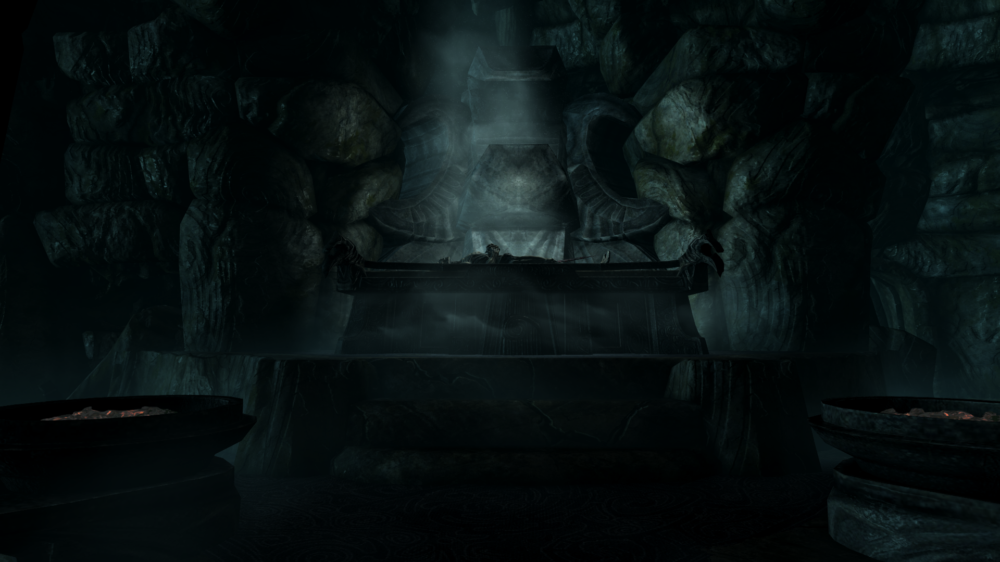

From a modder to a level designer: Modeling levels
(Originally posted on 12.11.2019)
For the last year and a half I have been focusing my creative energies into teaching myself level design and building mods for Elder Scrolls 5: Skyrim. Somewhere around my third mod, I noticed that I kept asking myself the same questions: What are the stories behind the levels of the mod? What is the purpose of this level? What kind of an experience I want to convey to the player?
Initially I started writing these questions - and answers to them - down as simple notes. Long breaks without being able to work on my levels was quite common so I needed to have some documentation to remember what I was doing. As I worked on my levels and refined the notes, I realized that I had uncovered my mental model of a level.
This model consists of five layers:
- Why
- Design
- Lore
- Flow
- Clutter
Next I will go through what these layers mean and then will finish off by reflecting on how this model helped me build better levels.
Why
Why tells the reason the level exists in the first place. It answers the question a player might ask Why would I want to play this level?
For example, the why for Snowgaard was
To give more variance and role playing options for conjurers.
And Winter’s Grasp’s why was:
Make frost magic as powerful as fire and shock magic.
The whys are closely coupled with the game's mechanics and balance. They provide the in-game reason how the player - and her character - would benefit from playing the level(s).
It is important to note, that why is not the quest a level might contain. I see the purpose of a quest more in arousing the player's curiosity whereas why states the gain to be had from finishing the level(s).
Design
With design I refer to the design choices and principles of the level. It answers the question What kind of an experience I want to convey to the player?
Is the level more action driven or does it have more emphasis on puzzles? Is there an overall theme of how much player agency I want to empower? What is the level’s aesthetic theme? And so on.
Often my design choices are quite specific. For example, with Vrage’s Watch I made a conscious choice to drop the traditional boss fight and instead have lots of mass combat. This got some expected yet valid critique.
Another example of a specific design principle was with Frostfaarn, where I wanted to make sure that combats would happen inside rooms instead of giving the player the alternative to retreat back into a tunnel (unbeknowst to me then, I was solving the door problem).
Quite often my design choices are driven by the desire to keep learning and trying out different ideas.
Lore
With lore I refer to the in-game history and background of the level. Why does it exist in that world? Does someone live there? Who? Why do they live there? Did someone live there before them?
If Why answers why the level exists from the player’s perspective, Lore answers why the level exists from the game’s perspective.
For example, my mod Isle of Storm is about an island which is constantly battered by storms. On the island there is a fort which is partially inhabited by bandits and under the fort lies an ancient crypt. A shortened lore of the Isle of Storm goes something like this:
Thousands of years ago during the last years of the Dragon Wars, a surviving Dragon Acolyte retreated to his family fortress. His master had been slain by the rebels and the Dragon Acolyte had fled with his master’s remaining forces and powerful mask. The mask contained powerful storm enchantments which were not fully contained any more as it’s owner had died. The Acoyte died soon and his followers built him a tomb and buried him with his master’s mask. They sealed the tomb and left the island to be forgotten.
This explains why the island is battered by storms and why there is an ancient crypt beneath.
Some hundred years ago a powerful storm mage come to unlock the secret of the Isle. He uncovered the tomb but was kept out by it’s magical locks. Most of the old fort had collapsed so he started building a new fort on top of the crypt to give him shelter as he tried to unlock the tomb. However, the storm mage died suddenly, leaving only his Storm Thrall to guard the crypt.
This explains the newer fort structures and why there is a Storm Thrall inside the fort.
Few years ago deserters from the Imperial army started to use the island as an camp knowing that it’s grim reputation would give them safety. They did not, however, venture deeper into the fort or crypt as the Storm Thrall still guarded the keep’s inner rooms.
This explains why the exterior area is inhabited by bandits. And why would a group of bandits choose to live in an island battered by storms.
Most of this lore is implicit and there is no way for the player to uncover all this history I have imagined for the level. To me lore is more about explaining the level to myself than something for the player to discover.
Flow
Flow refers to the physical layout of the level and the level’s flow of action. I have written more about flow in my earlier post. Here it suffices to say that the two main building blocks of flow are pacing and forcing.
Pacing means the alternation of challenge and calm as the player advances through the level. The default is that challenge should be followed by a less challenging section and that every challenge should be tougher than the previous one.
Forcing means how linear the flow is. Is the flow same for every player or does the level provide multiple different paths? Does the player have any choices in what order - and of what magnitude - the challenges are?
Clutter
Clutter refers to the details of the level. With clutter we inform the player about her possibilities to act on the level. Thus it is of utmost importance in enabling player agency. Through clutter we also give the player glimpses of the lore behind the level.
With clutter we are dealing with the low level (sic) principles and common patterns of level design: How to use lighting and movement to draw the players attention? How to communicate enough but not too much to make puzzles fun? How to inform the player of advantageous spots in a room and so on.
Model of a level
The five layers - Why, Design, Lore, Flow and Clutter - together form my model of a level. Naturally the layers have overlap and their boundaries are not clear cut. However, the layering gives me a prioritized view into the level. This enables me to solve problems as I encounter them.
Whenever I would get stuck I would simply refer up the model. For example, if I was cluttering a room but couldn’t get it to work I would refer up to flow. How much of the room I can change without changing the flow of the level? If the room does not work, can I remove it? Or is the problem not with the room but with the layout? Should I change the layout and flow? If I make a change to layout, does it comply with my design? If not, should I abandon the changes or update my design accordingly? And so on.
The model also keeps the levels cohesive. I have a tendency to keep prototyping, iterating and getting new - and 'better' - ideas. The model gives me a good picture of what the level should be about. Knowing this, it is pretty easy to make decisions about what to keep and what to cut.
My model is by no means perfect and will continue to evolve. It is also important to note that the model is not an end itself. I do not produce any kind of comprehensive documentation as a by-product of my levels. I only model the amount I need to get the levels done. If I am progressing fine without the level having any lore, I do not feel the need to force any lore. As the model is mainly a problem solving tool, the less I encounter problems, the less I model.
